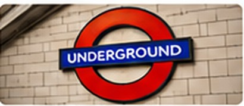
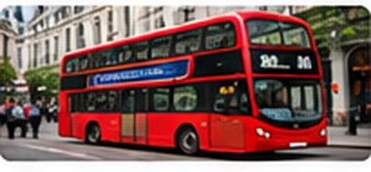
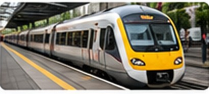

Getting Around London
London has several public transport options, including the Underground, buses and trains.
London Underground

The Tube helps people travel between many parts of London.
London Buses

Red double-decker buses are a familiar sight in London. Buses serve many parts of the city.
Trains

Rail services connect London with nearby places and other UK cities.
Travel Tips
Check the latest journey information before travelling. Visit Transport for London to plan a route.